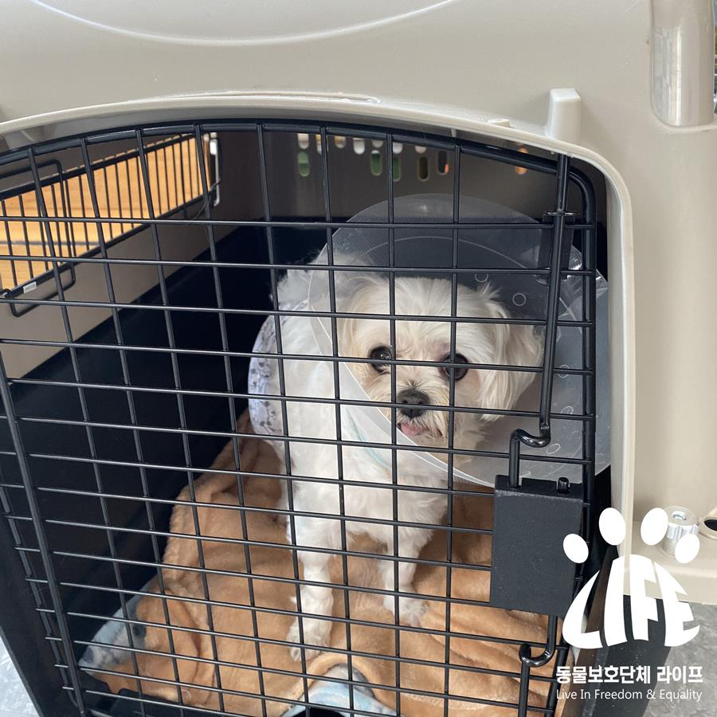
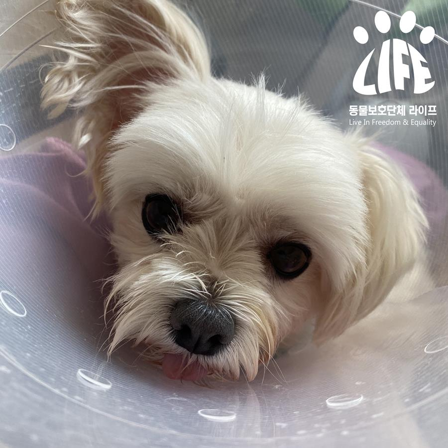

Busan City Turning Away from Emergency Care Animals (Application for Adoption of Puppy with Grandma Dementia in her 80s)
Registration Date Author Life Attachment activitydata_12_01{kind=link}
Last week, I received a phone call.
My grandmother, a basic living security recipient in her
80s who lives alone in Busan, is uncomfortable with mobility and has severe
hearing loss, and she recently came to dementia and had to be transferred to a
nursing hospital, but
the puppy her grandson brought with her was struck in
the eye and refused to be admitted.
Even her grandson, who was the only family member of her grandmother, died
in
a car accident last month and had no one to take care of the puppy,
and she was holding out saying she couldn't
go to a nursing home until she had a place to take care of the pampered puppy
When the animal protection group Life received the news<contacted the Pet Welfare and Culture Center operating in Busan City to
use the Emergency Protected Animal System>, but the answer was that it was not possible.
The <Emergency Protected Animal System> is a system set out in the Ordinance on the Protection and Welfare of Animals in Busan City, which was amended in January last year,
in which animals in
need of urgent protective measures are acquired and protected or
distributed by the
City of Busan.
It is defined here that an emergency protected animal is an animal that is
difficult to receive adequate protection for reasons
such as the death of its owner.
Grandmother puppies are also emergency care animals.
However, due to this or that excuse of the Busan Municipal Affairs Department,
the protection measures were finally rejected.
The animal protection group Life first visited the site in person to check the animal's
situation,
Deciding that the situation was not possible to be cared for by the grandmother, the animal was rescued and taken to the
hospital.
Through the consultation at the veterinary clinic, I noticed that my teeth were
in poor condition
and decided to combine the foot with neutering surgery.
Through
the request for temporary care of animals, many people have extended a helping hand and
have sought appropriate temporary shelter.
However, during the period of temporary protection
You need to find a family that will take charge of your whole life
The homework is still there.
In the case of the rescue of animals that have been denied emergency protection by the
city of
Busan, as in this case,
This year alone, it's already three times.
Two dogs that were left unattended by a mentally ill person in a house in
Donglae District last March,
A cat whose owner collapsed from a stroke in a swimming pool last May and was left alone on
the rooftop,
And, this time Grandma's puppy.
Whenever you request emergency protection
The city of Busan struck a hand every time saying that there was a situation,
and each time it was taken over by the animal protection organization Life.
Animal Protection Group Life Every Time
Animals cannot be rescued and protected.
Space required for the structure and the cost of treatment, etc.
Not sponsored by the government and municipalities
It's too hard for a nonprofit to handle.
Aging, an increase in 1-person households,
and an increasing pet population are unavoidable social phenomena.
Therefore, these urgent animal protection cases are
bound to continue to occur in the future.
In a world where even the existing systems are
not in place, can we really create a happy city
and a happy country with pets?
Busan City on September 8th,
Busan Municipal Veterinarian Association, together with the Busan Daily
For the establishment of pet culture and the cultivation of industry
We have signed an MOU.
In this position, Busan City,
For the realization of happy Busan with pets
To develop various policies and improve related systems.
He has stated that he will take the lead.
Such a slogan in Busan City It only feels empty.
Animal Protection Group Life
In order to prevent this problem from
being repeated, we have asked the Busan City Council to improve the relevant system.
The Busan City Council has pledged active cooperation.
Life also solves the problem
I promise to work to the end.
Busan City's complacent attitude
It puts the animal in crisis at bay.
The Animal Protection Act sets out the responsibilities of states and municipalities for
the proper protection and management of animals.
The reasons for the enactment of the Animal Protection Act in Busan City and
We should not forget the intention.
▼ Fill out the adoption application ▼
https://docs.google.com/forms/d/1JikBtHq5nc-pPfEs6FNZY5cFhSsAhw77mJk1xEQDM2Y/viewform?edit_requested=true▼ Sponsoring an animal protection organization Life ▼
donateWe will create a world in which animals and people coexist together.
Animal Protection Group Life